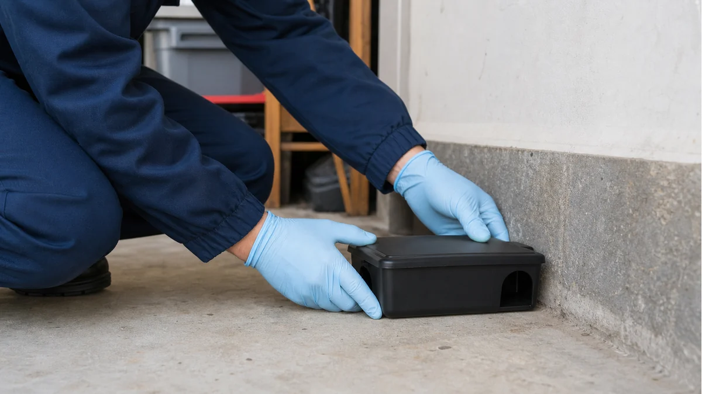
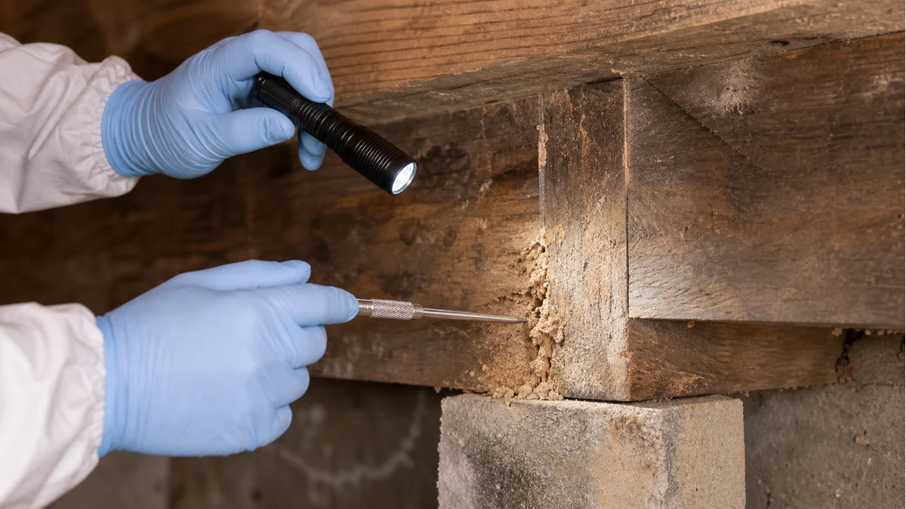

Service library
Pest control connections organized by concern.
Explore common residential pest categories, then connect with independent local providers who can discuss inspection, availability, pricing, and written service terms.
Service map
Start with the kind of problem you are seeing.
Each category is designed around the questions homeowners usually need answered before choosing a provider: inspection scope, preparation, documentation, and follow-up terms.
Household insects
Problems that usually start indoors, then point back to food, moisture, or entry points.

Ant Control
For visible trails, exterior nesting, and repeated indoor activity around kitchens, baths, windows, and walkways.
- Entry point questions
- Interior and exterior review

Cockroach Control
For activity in kitchens, baths, utility rooms, storage areas, and multi-unit spaces.
- Moisture and sanitation factors
- Inspection scope
General Pest Control
For broad, seasonal, or recurring pest concerns where a prevention-focused plan may help.
- Included pests
- Visit frequency
Property risk
Concerns where documentation, access points, and provider qualifications matter most.

Rodent Control
For droppings, attic sounds, gnaw marks, nesting indicators, exclusion needs, and monitoring questions.
- Access point review
- Follow-up and monitoring

Termite Inspection
For visible indicators, real estate needs, structure-size questions, and inspection documentation.
- Report format
- License verification
Biting pests
Issues where preparation, personal exposure, pets, and follow-up can all be part of the plan.

Bed Bug Control
For inspection options, preparation requirements, travel or furniture concerns, and possible follow-up visits.
- Room preparation
- Monitoring options

Flea & Tick Control
For indoor and outdoor activity, pet-related coordination, wildlife exposure, and prevention considerations.
- Indoor and yard review
- Veterinary coordination
Outdoor pressure
Seasonal activity around yards, patios, shaded areas, and standing water.

Mosquito Control
For yards, patios, shaded areas, standing water, seasonal visit frequency, product details, and cancellation terms.
- Included outdoor areas
- Product and safety details
- Visit frequency and terms